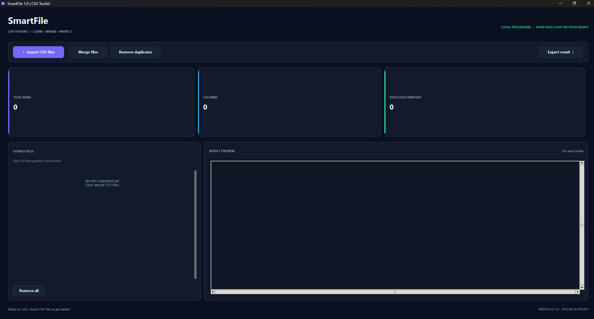
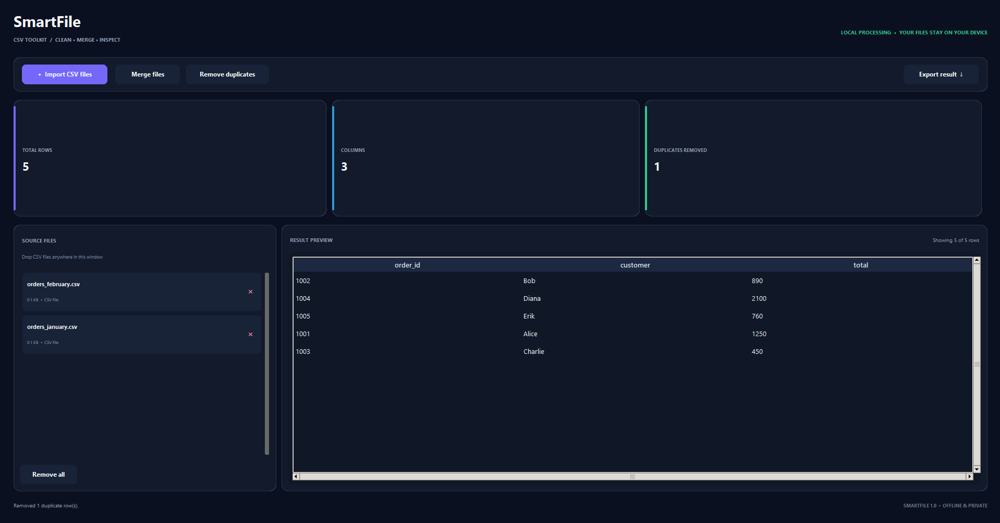
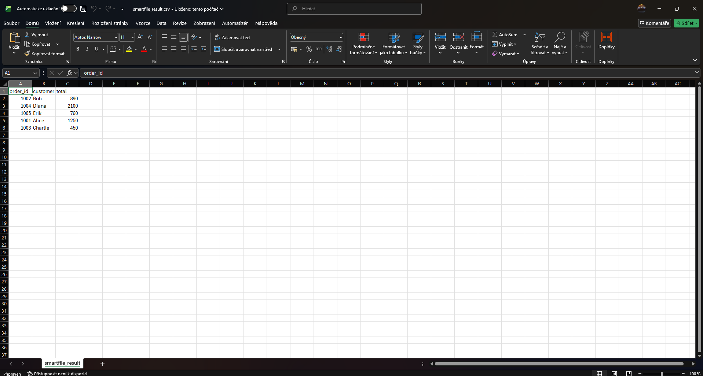

Merge CSV files
Combine multiple CSV files into one organized dataset.
Merge, clean and inspect your CSV files with one simple Windows application. No complicated tools. No unnecessary steps.
Combine multiple CSV files into one organized dataset.
Clean your data and remove duplicate rows in seconds.
Inspect your files and understand your data before exporting.
A clean interface built to make everyday CSV tasks easier.



Download SmartFile for Windows and take control of your CSV files.
Download SmartFile ↗ Windows · Version 1.0.0 · Local processing